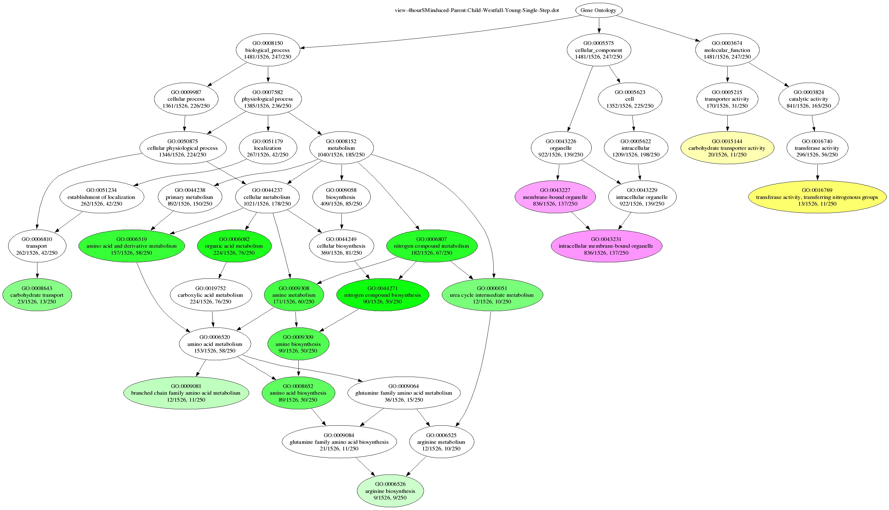

The command-line version of Ontologizer can be used for batch processing or pipelines. Most general users will prefer the Java WebStart version, though.
First of all, you need to download the .jar file. A current version can be obtained from from here.
Ontologizer is a Java-Application and needs to be started via the ‘java’ command and be invoked with a plenty of arguments. All possible command arguments can be viewed via the –help argument. E.g. java -jar Ontologizer.jar –help. Here is a full list of options:
Short Option Long Option Explanation
-m --mtc Specifies the MTC method to use. Possible values are: "Bonferroni" (default), "None", "Westfall-Young-Single-Step"
-c --calculation Specifies the calculation method to use. Possible values are: "Parent-Child-Union", "Parent-Child-Intersection", "Term-For-Term" (default). For a full list, consult the output of the -h option.
-a --association File containing associations from genes to GO terms. Required
-d --dot For every studyset analysis write out an additional .dot file (GraphViz) containing the GOTerm graph with significant nodes. The optional argument in range between 0 and 0.5 specifies the maximum level on which a term is considered as significantly enriched. By appending a GO Term identifier (separated by a comma) the output is restriced to the subgraph originating at this GO Term.
-f --filter Filter the gene names by appling rules in a given file (currently only mapping supported).
-g --go Path to gene_ontology_edit.obo file (Required)
-h --help Shows this help
-i --ignore Ignore genes to which no association exist within the calculation.
-n --annotation Create an additional file per study set which contains the annotations.
-o --outdir Specfies the directory in which the results will be placed.
-p --population File containing genes within the population. Required
-r --resamplingsteps Specifies the number of steps used in resampling based MTCs
-s --studyset File of the study set or a directory containing study set files. Required
-v --version Shows version information and exits
In order to do something useful, Ontologizer must be started with several arguments (as indicated with “Required” within the output above).
First, you are required to specify the -g (or –go) option. This defines the path to a file which contains the GO terminology and structure. Ontologizer is able to parse files in the OBO format. Such are available directly at the GO Website.
Second, you are required to specify the -a option which defines the mapping of gene names to GO terms. The GO Website provides association files for a variety of organisms, as well.
Third, you must specify a population file with the -p option. This file contains all gene names (one per line) of the population set, e.g. the names of the genes of your microarray.
Last, you need to specify the path to your study set(s) with the -s option.. This can eighter be a single file for a single study set or a directory, in which case all files (ending with *.txt) are considered as separate study sets. As for the population file, one line represents only a single gene name.
When started with these four parameters only, the output of Ontologizer’s calculation is written to a basic ascii table file into the same directory where the study files are located. The table’s filename is derived from the name of the study set in question but prepended with “table-” string.
Using the -d option, you can instruct Ontologizer to create a graphical output of the results. For every study set, a file (name is prepended with “view-”) is written which can be read by the graphviz ‘dot’ tool to produce a viewable graphics file. In this file, terms are depicted by nodes and their hierachical relations are depicted by edges. Because the GO DAG contains a huge amount of terms, the graph is constructed only for signifant terms and their predecessors (up to the source) and those significant terms are highligthed. Which terms are considered as significant is influenced by their p-values and the significance threshold. This threshold is specified as a parameter to the -d argument. It must be a valid floating point value ranging from 0 to 0.5. For example use “-d 0.05” to define those terms as significant whose p-value falls below 0.05.
In addition, you can specify a GO Term ID, after the floating-point value (separated by “,”). In this case only the subgraph starting at this term is written. For example use “-d 0.05,8152” to get only a graph with the term id GO:0008152 (metabolism) and its successors within the subgraph emanating from GO:0008152 such that all significantly overrepresented terms are included in the graph.
Some sample datasets and population sets can be downloaded from this page. To perform parent-child analysis using Westphal-Young MTC on the Yeast data set from the tutorial page and display the results using dot, enter the following command:
java -jar Ontologizer.jar -a gene_association.sgd -g gene_ontology.obo -s study/4hourSMinduced.txt -p population.txt -c Parent-Child-Union -m Westfall-Young-Single-Step -d 0.05 -r 1000
The corresponding files must be in the current directory (or their full path must be indicated). To create a PNG image with the result, enter
dot -Tpng view-4hourSMinduced-Parent-Child-Westfall-Young-Single-Step.dot -oExample.png
The corresponding graphic should look something like this: 
Obtaining Graphviz
Graphviz is a Open Source project which provides tools for layouting and depicting graphs. Hereby, graph references to mathematical entities which consists of nodes and edges.
A installed Graphviz system is a requirement for Ontologizer’s facility to visualize the results of an enrichment analysis. More precisely, the tool named dot is invoked which performs the layouting step of the graph.
Windows users can obtain the installation package of Graphviz following the Download link of www.graphviz.org. On this site, you also can find the latest source packages which can be used, for instance by Linux, users to compile the package. Linux Distributions such as Debian provide binary packages for Graphviz as well. This allows a straithforward installation of Graphviz.
Note that in general, the standard installtion (of the Windows and Linux installation) is perfectly suited for Ontologizer. If however, for any reason, the dot exectutable is not in the command path, you have to tell Ontologizer explicitly where this command can be found by entering the full path within the Preferences window, which can be obtained via the Window > Preferences…. menu entry.